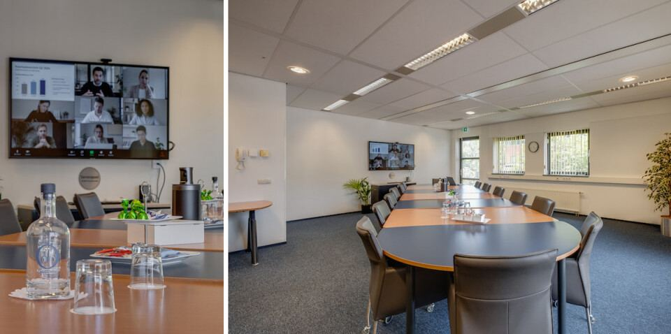

Nederland kent tienduizenden (belangen) verenigingen die zich inzetten voor een bepaalde doelgroep of doelstelling. Vaak draait een dergelijke instelling op de inbreng van vrijwilligers. Echter, in de huidige samenleving wordt het steeds moeilijker om vrijwilligers bereid te vinden om veel tijd te besteden aan de vereniging. Terwijl de noodzakelijke werkzaamheden wel doorgaan. Denkt u aan zaken als:
- Beheer telefoon en mailverkeer
- Ledenadministratie en boekhouding
- Website onderhoud
- Administratie en postverwerking
- Infrastructuur en 24-uurs bereik.
Bureau DFO beheert het secretariaat van diverse verenigingen. Hiervoor is een team van dames beschikbaar dat fulltime beschikbaar is vanuit een reeds bestaande infrastructuur.
Het is mogelijk om een eigen servicepakket samen te stellen voor uw vereniging met de werkzaamheden waar u behoefte aan heeft, tegen beperkte kosten. Neemt u hierover gerust contact op met Agaat van Ekeren – Relatiemanager van Bureau DFO – middels avanekeren@dfobv.nl

Op dit moment voert Bureau DFO voor de volgende verenigingen het secretariaat:
Heeft u interesse?
Laat het ons weten via het contactformulier of mail Agaat van Ekeren.